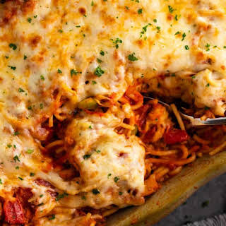

Spaghetti

My favorite meal that's sure to please
This simple spaghetti is my go to for a quick dinner that everybody loves, even the picky eaters.
With only eight ingredients and in less than thirty minutes the whole family can eat and be happy.
- 1 lb ground beef (I prefer using 90/10 or leaner)
- 1 jar spaghetti sauce of your choosing (I prefer Bertolli Olive Oil and Basil)
- 1/2 yellow onion diced
- 1 tomato diced
- 2 tbsp minced garlic
- 2 tbsp olive oil
- 1 package dry spaghetti noodles
- 1 package fresh grated parmesan
Recipe Instructions
- Start by heating the olive oil over medium heat
- Once hot toss in onion and garlic (make sure to keep stirring as to not burn)
- After onions start to turn clear turn to medium high heat and add the meat
- When the meat is browned, turn the heat to low and add in the jar of sauce and tomato
- While the spaghetti sauce is simmering bring 2 quarts water to a boil and add in the dry noodles
- Cook the noodles until desired consistency
- Once noodles are cooked the sauce should be ready as well
- Serve noodles and sauce in a bowl and top with the parmesan